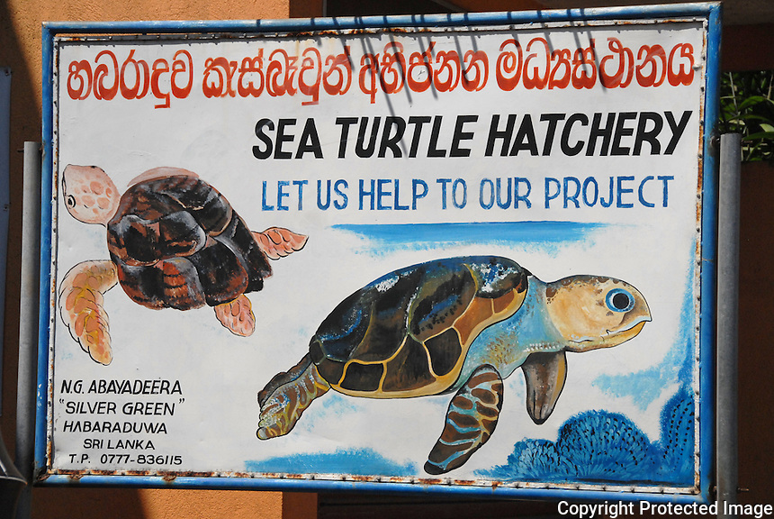
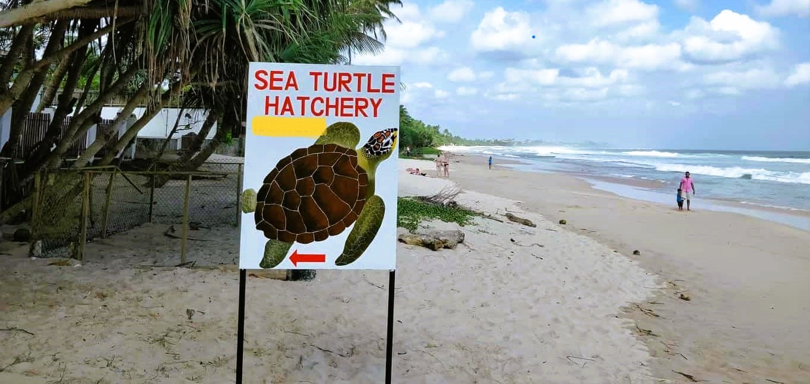
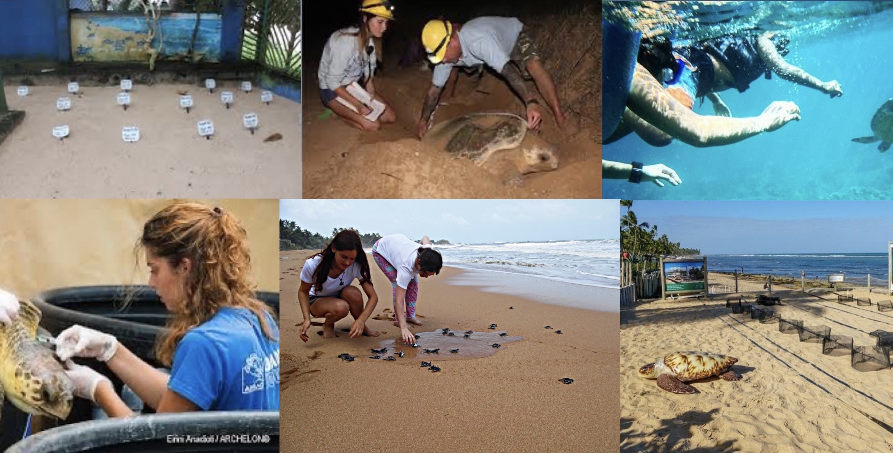

Bentota Turtle Hatchery
About Bentota Turtle Hatchery
Bentota Turtle Hatchery is a renowned sanctuary in Bentota, Sri Lanka. It plays a vital role in conserving and protecting various sea turtle species. The hatchery collects and relocates vulnerable sea turtle eggs for safer incubation. They also rehabilitate injured turtles and promote awareness through educational programs. Visitors can witness the life cycle of turtles and participate in releasing hatchlings into the ocean. Bentota Turtle Hatchery is a hub for research, conservation, and education, ensuring the survival of these magnificent marine creatures.
Turtle Conservation Efforts
The Bentota Turtle Hatchery in Sri Lanka is committed to sea turtle conservation. They protect nests, release hatchlings, provide rehabilitation for injured turtles, conduct educational programs, and contribute to research initiatives. Their efforts are crucial for the survival and well-being of sea turtles.
Here are some key conservation initiatives undertaken by the hatchery:
Nest Protection
Hatchling Release
Rehabilitation

Experience Bentota's Turtle Hatchery
At the Bentota Turtle Hatchery, visitors can have a unique and memorable experience. They can witness the nesting process of sea turtles, observe the hatching of adorable baby turtles, and even participate in releasing them into the ocean. Visitors can learn about the different turtle species, their life cycles, and the challenges they face in the wild. The hatchery also offers educational presentations and informative displays, allowing visitors to deepen their understanding of these incredible creatures. It's a remarkable opportunity to connect with nature and contribute to the conservation efforts of sea turtles.